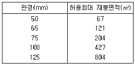
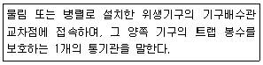
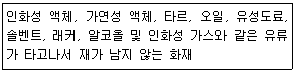
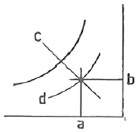
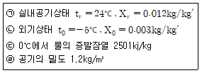
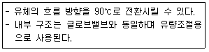
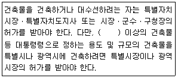
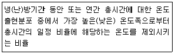
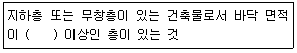

건축설비산업기사 (2019-09-21 기출문제)
1과목: 건축일반
1. MC(Modular Coordination)의 특징이 아닌 것은?
- 설계작업이 단순화 된다.
- 부재의 대량생산이 가능하다.
- 현장작업이 단순해지고 공기가 단축된다.
- 보다 다양한 입면이 나타난다.
(정답률: 93%)

2. 장소별 최적의 잔향시간에 관한 설명으로 옳지 않은 것은?
- 실의 사용목적과 실 용적에 의하여 최적의 잔향시간을 결정한다.
- 강연이나 연극이 이루어지는 실에서는 잔향시간을 비교적 짧게 한다.
- 음향설비를 이용하는 경우에는 잔향시간을 최적치보다 짧게 한다.
- 오케스트라나 뮤지컬 등 음악감상이 이루어지는 실에서는 잔향시간을 비교적 짧게 하여 명료도를 높인다.
(정답률: 83%)
3. 공동주택 건물의 인동간격에 관한 설명으로 옳지 않은 것은?
- 동지를 기준으로 한다.
- 태양의 고도 및 일조권에 관계가 있다.
- 건물의 높이와 관계가 있다.
- 최소한 3시간 이상의 일조시간을 유지해야 한다.
(정답률: 76%)
4. 호텔의 동선계획에 관한 설명으로 옳지 않은 것은?
- 고객동선과 서비스 동선은 분리시킨다.
- 숙박고객과 서비스 동선은 분리시킨다.
- 숙박고객은 프런트를 거치지 않고 직접주차장으로 갈 수 있어야 한다.
- 고객동선은 명료하고 단순해야 한다.
(정답률: 90%)
5. 상점건축의 정면(facade)구성에서 필요한 광고 요소5가지에 해당되지 않는 것은?
- 주의(Attention)
- 기억(Memory)
- 특성(Characteristic)
- 행동(Action)
(정답률: 82%)
6. 도서관계획에 관한 설명으로 옳지 않은 것은?
- 열람실은 채광이 좋고 조용하며 서고에서 멀리 떨어진 곳에 배치시킨다.
- 도서관의 신축 시 대지선정과 배치단계에서부터 장해의 성장에 따른 증축 간증한 공간을 확보할 필요가 있다.
- 서고의 수장능력 기준은 능률적인 작업용량으로서 서고공간 1m3당 약 66권 정도이다.
- 서고 내에 있는 서가는 정리, 수납에 중점을 열람의 용이성에 중점을 둔다.
(정답률: 84%)
7. 조명에 악센트를 주며 상품전시를 대상으로 하여 스포트라이트가 사용되는 조명은?
- 직접조명
- 간접조명
- 국부조명
- 반간접조명
(정답률: 90%)
8. 철근코크리트 구조의 철근조립 시 철근의 간격을 유지해야 하는 주된 이유와 가장 거리가 먼 것은?
- 부재의 소요강도 확보
- 재료분리 방지
- 내화성 확보
- 콘크리트 티설 시 유동성에 확보
(정답률: 69%)
9. 합판, 각종 섬유제 보드류, 석면시멘트판, 석고판 등을 30~60cm 정도의 소형판으로 만들어 반자를 구성한 것은?
- 구성반자
- 작은판반자
- 내화성 확보
- 회반죽반자
(정답률: 65%)
10. 목구조의 계단에 설치되는 멍에에 관한 설명으로 옳지 않은 것은?
- 계단의 너비가 약 1m 이상인 경우에 설치한다.
- 디딤판의 휨과 보행잡음을 방지하기 위하여 설치한다.
- 디딤판의 진동을 방지하기 위하여 강도가 있는 각재를 사용한다.
- 계단을 오르내리기에 편리하고 조형적 안정성의 목적으로 설치한다.
(정답률: 65%)
11. 목재의 집함에 있어 듀벨과 같이 사용되며 인장력에 작용하는 접합철물로 옳은 것은?
- 리벳
- 볼트
- 나사 못
- 인서트
(정답률: 62%)
12. 기초의 설치 시 유의사항에 관한 설명으로 옳지 않은 것은?
- 지하실은 침하의 방지를 위해 가급적 건물의 일부에만 설치한다.
- 지중보를 충분히 크게 하여 강성을 높여 부동침하를 방지한다.
- 다른 형태의 기초나 말뚝은 동일건물에 혼용하지 않도록 한다.
- 기초판(footing)은 그 지방의 동결선 이하에 설치한다.
(정답률: 77%)
13. 학교교사의 배치형식과 거리가 먼 것은?
- 플랫형
- 폐쇄형
- 분산병렬형
- 클러스터형
(정답률: 59%)
14. 사무소건축의 코어시스템에 관한 설명으로 옳지 않은 것은?
- 공용부분을 한 곳에 집약시켜 사무소의 유효면적이 증대된다.
- 설비요소의 집약으로 순환성, 효율성이 증대된다.
- 편심 코어형은 바닥면적이 큰 고층 규모의 오피스에 적합하다.
- 중심 코어형은 내부공간과 외관이 획일적으로 되기 쉽다.
(정답률: 79%)
15. 호텔건축의 기능적 분류에 해당되지 않는 것은?
- 요리부분
- 관리부분
- 사교부분
- 숙박부분
(정답률: 76%)
16. 화장실 및 호텔의 주방에 일반적으로 채용되는 환기방식은?
- 자연 급기-강제 배기
- 자연 급기-자연 배기
- 강제 급기-자연 배기
- 강제 급기- 강제 배기
(정답률: 82%)
17. 강구조에서 기둥과 보의 접합에 관한 설명으로 옳지 않은 것은?
- 휨모멘트에 작은 곳에서 접합한다.
- 보와 기둥의 강접합 시 플랜지와 웨브는 기둥에 모두 모살용접으로 처리한다.
- 보를 기둥에 직접 용접하면 하향자세로 용접이 가능하여 용접속도가 좋다.
- 접합된 기둥에 웨브에는 스티프너로 보강한다.
(정답률: 62%)
18. 다음 반자의 분류 중 널반자에 속하지 않는 것은?
- 치받이널반자
- 구성반자
- 살대반자
- 우물반자
(정답률: 55%)
19. 사무소 건축의 화장실 배치에 관한 설명으로 옳지 않은 것은?
- 각 사무실로부터 동선이 간단할 것
- 각층마다 공통의 위치에 있을 것
- 가능하면 외기에 접하는 위치로 할 것
- 각 층에서 3개소 이상 여러 곳에 분산 배치할 것
(정답률: 88%)
20. 주택의 동선계획에 관한 설명으로 옳지 않은 것은?
- 동선이 가지는 요소는 빈도, 속도, 하중의 세 가지이다.
- 동선상의 하중이 큰 가사노동은 굵고 짧게 배치하는 것이 좋다.
- 복도가 없는 거실은 가족동선의 집중으로 안정된 분위기가 확보된다.
- 개인, 사회, 가사노동권의 3개 동선이 서로 분리되어 간섭이 없어야 한다.
(정답률: 74%)
2과목: 위생설비
21. 급수 배관에 에어챔버를 설치하는 주된 이유는?
- 수격작용을 방지하기 위하여
- 배관의 부식을 방지하기 위하여
- 배관의 동파를 방지하기 위하여
- 크로스 커넥션을 방지하기 위하여
(정답률: 83%)
22. 건축물 지분의 수평투영 면적이 600m2인 경우, 4개의 우수수직관을 설치하고자 한다. 최대 강우량이 130mm/h일 때 우수수직관의 관경으로 가장 적당한 것은? (단, 아래 표의 허용 최대 지붕면적은 강우량이 100mm/h일 경우이다.)

- 65mm
- 75mm
- 100mm
- 125mm
(정답률: 65%)
23. 다음의 급수방식 중 일반적으로 하향급수 배관방식으로 배관하는 것은?
- 수도직결방식
- 고가탱크방식
- 압력탱크방식
- 펌프직송방식
(정답률: 86%)
24. 직접가열식 급탕방식에 관한 설명으로 옳지 않은 것은?
- 간접가열식에 비해 열효율이 높다.
- 일반적으로 저압 보일러를 사용한다.
- 보일러 내부에 방식처리를 고려할 필요가 있다.
- 저탕조와 보일러를 직결하여 순환가열하는 방식이다.
(정답률: 69%)
25. 오수처리방법 중 물리적 처리방법에 속하지 않는 것은?
- 소독
- 침전
- 교반
- 스크린
(정답률: 73%)
26. 다음 설명에 알맞은 통기관의 종류는?

- 각개통기관
- 결합통기관
- 신정통기관
- 공용통기관
(정답률: 58%)
27. 기구배수부하단위(EFU)의 기준이 되는 기구는?
- 세탁기
- 세면기
- 소변기
- 대변기
(정답률: 82%)
28. 10℃의 물 150kg과 80℃의 물 100kg을 혼합할 경우, 혼합된 물의 온도는?
- 28℃
- 38℃
- 45℃
- 63.2℃
(정답률: 67%)
29. 경질 염화 비닐관에 관한 설명으로 옳지 않은 것은?
- 금속관에 비해 열에 약하다.
- 금속관에 비해 전기 절연성이 크다.
- 금속관에 비해 산, 알칼리에 약하다.
- 금속관에 비해 온도변화로 인한 신축이 크다.
(정답률: 78%)
30. 다음 중 배관의 신축ㆍ팽창량을 흡수 처리하기 위해 사용되는 신축이음에 속하지 않는 것은?
- 슬리브형 이음
- 벨로즈형 이음
- 플랜지형 이음
- 스위블형 이음
(정답률: 70%)
31. 옥외소화전의 설치개수가 3개인 경우, 옥외소화전설비의 수원의 저수량은 최소 얼마 이상이 되도록 하여야 하는가?
- 4.8m3
- 7.8m3
- 14m3
- 21m3
(정답률: 60%)
32. 다음 중 건물의 급수량 게산에 고려할 사항과 가장 관계가 먼 것은?
- 급수기구의 종류
- 급수기구의 수
- 건물의 용적률
- 사용 인원수
(정답률: 73%)
33. 간접배수에서 음료용 저수탱크의 간접배수관의 배수구 공간은 최소 얼마 이상으로 하여야 하는가?
- 50mm
- 100mm
- 150mm
- 200mm
(정답률: 53%)
34. 내경 25mm, 광길이 15m인 매끈한 관을 통하여 물을 1.5m/s의 속도로 보낼 때, 압력손실은? (단, 관마찰계수는 0.03이다.)
- 20.25Pa
- 20.25kPa
- 40.5Pa
- 40.5kpa
(정답률: 53%)
35. 가스의 연소성을 나타내는 것은?
- 비열비
- 가버너
- 웨버지수
- 단열지수
(정답률: 75%)
36. 다음 설명에 알맞은 화재의 종류는?

- A급 화재
- B급 화재
- C급 화재
- K급 화재
(정답률: 80%)
37. 배관용 동관을 M, L 및 K 타입으로 구분하는 기준이 되는 것은?
- 관의 두께
- 관의 외경
- 관의 재질
- 관의 길이
(정답률: 82%)
38. 급수방식 중 고가탱크방식에 관한 설명으로 옳은 것은?
- 대규모의 급수 수요에 대응할 수 없다.
- 단수 시에도 일정량의 급수를 계속할 수 있다.
- 급수공급압력의 변화가 심하고 취급이 까다롭다.
- 위생성 및 유지ㆍ관리 측면에서 가장 바람직한 방식이다.
(정답률: 77%)
39. 다음 중 터빈 펌프에서 안내날개를 설치하는 이유로 가장 알맞은 것은?
- 진동을 감소시키기 위해서
- 소음을 감소시키기 위해서
- 펌프 내에 스케일 발생을 감소시키기 위해서
- 속도 에너지를 압력 에너지로 효율 좋게 변환하기 위해서
(정답률: 70%)
40. 펌프설치 시 유효흡입양정을 고려하는 이유는?
- 고양정을 얻기 위해서
- 대유량을 얻기 위해서
- 수격작용을 방지하기 위해서
- 캐비테이션을 방지하기 위해서
(정답률: 70%)
3과목: 공기조화설비
41. 다음의 습공기선도 구성 내용으로 옳지 않은 것은?

- a:건구온도
- b:절대습도
- c:습구온도
- d:엔탈피
(정답률: 62%)
42. 다음 중 환기공간과 배출요소의 연결이 옳지 않은 것은?
- 전기실-열
- 화장실-분진
- 주방-수증기
- 주차장-배기가스
(정답률: 88%)
43. 다음 중 냉난방 설계용 외기온도 설정 시 TAC온도를 적용하는 이유와 가장 관계가 먼 것은?
- 에너지 절약
- 합리적인 적용
- 과대 장치용량 지양
- 혼한기나 혹서기 대비
(정답률: 65%)
44. 단일덕트방식에 관한 설명으로 옳지 않은 것은?
- 전공기방식의 특성이 있다.
- 냉풍과 온풍을 혼합하는 혼합상자가 필요없다.
- 각 실이나 존의 부하변동에 즉시 대응할 수 있다.
- 2중덕트방식에 비해 덕트 스페이스를 적게 차지한다.
(정답률: 59%)
45. 다음과 같은 조건에서 실의 환기량이 2500m3/h인 경우, 환기에 의한 잠열부하는?

- 10.93kW
- 14.19kW
- 18.76kW
- 23.73kW
(정답률: 43%)
46. 공기조화기의 에어필터에 관한 설명으로 옳지 않은 것은?
- 송풍기의 흡입측이면서 코일의 흡입측에 설치한다.
- 필터에 공기의 흐름방향이 있는 경우에는 역방향으로 설치한다.
- 필터의 설치 위치 전후에는 점검과 보수를 위한 충분한 공간과 점검문을 설치한다.
- 유닛형 필터를 여러 개 조합하여 설치하는 경우에는 지그재그로 하여 통과면적을 크게 한다.
(정답률: 74%)
47. 송풍기의 관한 설명으로 옳지 않은 것은?
- 방사형은 자기청소(self clening)의 특성이 있다.
- 측류형은 낮은 충압에 많은 풍량을 송풍하는데 적합하다.
- 후곡형은 효율이 높고 논오버로드(nonover load) 특성이 있다.
- 다익형은 다른 형식에 비해 동일 용량에 대해서 회전수가 가장 많다.
(정답률: 55%)
48. 전기히터를 사용하여 습공기를 가열한 경우에 관한 설명으로 옳은 것은?
- 습구온도와 절대습도가 낮아진다.
- 건구온도는 높아지고 엔탈피는 일정하다.
- 절대습도는 일정하고 상태습도는 낮아진다.
- 절대습도는 높아지고 상대습도는 일정하다.
(정답률: 71%)
49. 공조기부하에 펌프 및 배관 등의 열부하를 더한 것으로서 냉동기나 보일러 용량을 결정하는데 이용되는 부하는?
- 외기부하
- 열원부하
- 기간부하
- 현열부하
(정답률: 73%)
50. 덕트 경로 중 풍량이 일정한 상태에서 덕트의 크기가 축소되었을 경우 압력변화에 관한 설명으로 옳은 것은?
- 정압이 증가한다.
- 동압이 증가한다.
- 전압과 정압이 증가한다.
- 전압, 동압, 정압이 모두 증가한다.
(정답률: 65%)
51. 직경이 50cm인 원형덕트에서 동압을 측정한 결과 60Pa이었다. 이 때 덕트를 통과하는 풍량은?
- 0.96m3/S
- 1.96m3/S
- 2.96m3/S
- 3.96m3/S
(정답률: 38%)
52. 어떤 실내의 취득 현열량이 8000W, 잠열량이 2000W이다. 실내의 공기조건을 26℃, 50%RH로 유지하기 위하여 취출온도를 17℃로 송풍하고자 할 때 현열비(SHF)는?
- 0.8
- 0.75
- 0.7
- 0.25
(정답률: 49%)
53. 길이 20m의 증기난방 배관에서 관의 온도를 30℃에서 109℃로 높였을 경우 늘어난 길이는? (단, 선팽창계수 1.3×10-5/℃이다.)
- 18.54mm
- 19.54mm
- 20.54mm
- 21.54mm
(정답률: 50%)
54. 외기 CO2 농도는 350ppm 이며, 실내 CO2의 허용농도를 1000ppm으로 할 때, 호흡시의 1인당 CO2 배출량이 0.02m3/h일 경우 1인당 요구되는 필요 환기량은?
- 24.9m3/hㆍ인
- 27.5m3/hㆍ인
- 30.8m3/hㆍ인
- 35.6m3/hㆍ인
(정답률: 43%)
55. 냉온수 배관의 기본회로 방식에 관한 설명으로 옳지 않은 것은?
- 배관의 분기부에 원칙적으로 밸브를 설치한다.
- 배관방식은 원칙적으로 리버스리턴방식으로 한다.
- 배관의 최소 구경은 원칙적으로 호칭경은 25A로 한다.
- 밀폐회로 방식에 대해서는 1개의 순환계통에 팽창탱크는 1기로 한다.
(정답률: 64%)
56. 외기온도 t0=-10℃, 실내온도 ti=20℃일 때, 벽체 면적 10m2를 통하여 손실되는 열량은? (단, 벽체의 열관류율 K=0.5W/m2ㆍK)(오류 신고가 접수된 문제입니다. 반드시 정답과 해설을 확인하시기 바랍니다.)
- 50W
- 100W
- 150W
- 200W
(정답률: 59%)
57. 전열교환기에 관한 설명으로 옳지 않은 것은?
- 잠열만이 교환된다.
- 공기 대 공기의 열교환기이다.
- 공장 등에서 환기에서의 에너지 회수방식으로 사용한다.
- 공조시스템에서 보일러나 냉동기의 용량을 줄일 수 있다.
(정답률: 71%)
58. 공조조화기 내 냉각코일은 통과하는 공기와 열교환을 하게 된다. 이와 관련된 설명으로 옳지 않은 것은?
- 바이패스 팩터와 콘택트 팩터의 곱은 1이다.
- 코일 핀의 형상에 따라 바이패스 팩터는 작아진다.
- 냉각코일의 열수가 많을수록 바이패스 팩터는 작아진다.
- 냉각코일을 통과하는 공기의 속도가 빠를수록 바이패스 팩터는 커진다.
(정답률: 64%)
59. 증기트랩 중 벨로즈식 트랩에 관한 설명으로 옳지 않은 것은?
- 온도조절식 트랩이다.
- 방열기 트랩 등에 적용된다.
- 구조상 역류의 우려가 없다.
- 초기 가동 시에 공기배출능력이 좋다.
(정답률: 65%)
60. 다음과 같은 특징을 갖는 밸브는?

- 콕
- 볼밸브
- 앵글밸브
- 체크밸브
(정답률: 72%)
4과목: 건축설비관계법규
61. 건축물의 거실(피난층의 거실 제외)에 국토교통부령으로 정하는 기준에 따라 배연설비를 하여야 하는 대상 건축물에 속하지 않는 것은? (단, 6층 이상인 건축물의 경우)
- 종교시설
- 판매시설
- 운동시설
- 공동주택
(정답률: 63%)
62. 건축물의 주계단ㆍ피난계단 또는 특별피난계단에 설치하는 난간 및 바닥을 이동의 이용에 안전하고 노약자 및 신체장애인의 이용에 편리한 구조로 하여야 하는 대상 건축물에 속하지 않는 것은?
- 판매시설
- 위락시설
- 문화 및 집회시설
- 공동주택 중 기숙사
(정답률: 64%)
63. 피난 용도로 쓸 수 있는 광장을 옥상에 설치하여야 하는 경우에 해당되지 않는 것은?
- 5층 이상인 층이 판매시설의 용도로 쓰는 경우
- 5층 이상인 층이 종교시설의 용도로 쓰는 경우
- 5층 이상인 층이 위락시설 중 주점영업의 용도로 쓰는 경우
- 5층 이상인 층이 문화 및 집회시설 중 전시장의 용도로 쓰는 경우
(정답률: 55%)
64. 다음은 건축법상 건축허가에 관한 기준이다. ()안에 알맞은 것은?

- 10층
- 16층
- 21층
- 41층
(정답률: 74%)
65. 공동주택의 거실에서 채광을 위하여 설치하는 창문 등의 면적은 그 거실의 바닥면적의 최소 얼마 이상이어야 하는가? (단, 거실의 용도에 따른 조도 기준 이상의 조명장치를 설치하지 않은 경우)
- 5분의 1
- 10분의 1
- 20분의 1
- 30분의 1
(정답률: 71%)
66. 다음 중 건축법령상 건축에 속하지 않는 것은?
- 증축
- 개축
- 재축
- 대수선
(정답률: 74%)
67. 공동주택과 오피스텔의 난방설비를 개별난방 방식으로 하는 경우에 관한 기준 내용으로 옳지 않은 것은?
- 보일러는 거실외의 곳에 설치할 것
- 오피스텔의 경우에는 난방구획을 방화구획으로 구획할 것
- 보일러를 설치하는 곳과 거실사이의 경계벽은 출입구를 제외하고는 내화구조의 벽으로 구획할 것
- 보일러실의 아랫부분에는 지름 5cm이상의 배기구를 항상 열려있는 상태로 바깥공기에 접하도록 설치할 것
(정답률: 58%)
68. 제연설비를 설치하여야 하는 특정소방대상물에 속하지 않는 것은?
- 지하가(터널 제외)로서 연면적 1000m2 이상인 것
- 종교시설로서 무대부의 바닥면적이 200m2 이상인 것
- 문화 및 집회시설로서 무대부의 바닥면적이 150m2 이상인 것
- 문화 및 집회시설 중 영화상영관으로서 수용 인원 100명 이상인 것
(정답률: 58%)
69. 건축법령상 문화 및 집회시설에 속하지 않는 것은?
- 기념관
- 박람회장
- 종교집회장
- 산업전시장
(정답률: 49%)
70. 건축물 관련 긴축기준의 허용오차 범위가 3% 이내인 것은?
- 출구 너비
- 반자 높이
- 벽체 두께
- 건축물 높이
(정답률: 73%)
71. 다음 중 방화벽의 구조 기준으로 옳지 않은 것은?
- 내화구조로서 홀로 설 수 있는 구조일 것
- 방화벽에 설치하는 출입문에는 갑종 또는 을종방화물을 설치할 것
- 방화벽에 설치하는 출입문의 너비 및 높이는 각각 2.5m 이하로 할 것
- 방화벽의 양쪽 끝과 위쪽 끝을 건축물의 외벽면 및 지붕면으로부터 0.5m 이상 튀어나오게 할 것
(정답률: 57%)
72. 층수가 10층이고, 각 층의 거실면적이 1000m2인 업무시설에 설치하여야 하는 승용승강기의 최소 대수는? (단, 16인승 승강기인 경우)
- 1대
- 2대
- 3대
- 4대
(정답률: 41%)
73. 축냉식 전기냉방설비의 설계기준 내용으로 옳지 않은 것은?
- 축열조는 보온을 철저히 하여 열손실과 결로를 방지해야 한다.
- 열교환기에서 점검을 위한 부분은 해체와 조립이 용이하도록 하여야 한다.
- 열교환기는 시간당 최대냉난방열량을 처리할 수 있는 용량 이상으로 설치하여야 한다.
- 자동제어설비는 수동조작을 할 수 없도록 하며 감시기능 등을 갖추어야 한다.
(정답률: 79%)
74. 공동 소방안전관리자 선임대상 특정소방대상물의 층수 기준은? (단, 복합건축물의 경우)
- 층수가 3층 이상인 것
- 층수가 5층 이상인 것
- 층수가 8층 이상인 것
- 층수가 10층 이상인 것
(정답률: 66%)
75. 건축물의 바깥쪽으로 나가는 출구를 안여닫이로 하여서는 안되는 건축물에 속하지 않는 것은?
- 종교시설
- 위락시설
- 문화 및 집회시설 중 전시장
- 문화 및 집회시설 중 공연장
(정답률: 48%)
76. 건축물의 에너지절약설계기준상 다음과 같이 정의되는 용어는?

- 위험률
- 온도율
- 부분부하율
- 최대부하율
(정답률: 73%)
77. 다음의 소방시설 중 소화활동설비에 속하지 않는 것은?
- 연소방지설비
- 연결살수설비
- 연결송수관설비
- 자동화재탐지설비
(정답률: 68%)
78. 다음은 건축허가등을 할 때 미리 소방본부장 또는 소방서장의 동의를 받아야 하는 건축물 등의 범위에 관한 기준 내용이다. ()안에 알맞은 것은? (단, 공연장이 아닌 경우)

- 100m2
- 150m2
- 200m2
- 300m2
(정답률: 41%)
79. 신축 또는 리모델링하는 100세대 이상의 공동주택은 시간당 최소 몇 회 이상의 환기가 이루어질 수 있도록 자연환기설비 또는 기계환기설비를 설치하여야 하는가?
- 0.5회
- 0.7회
- 1.2회
- 1.5회
(정답률: 76%)
80. 상업지역 및 주거지역에서 건축물에 설치하는 냉방 및 환기시설의 배기구는 도로면으로부터 최소 얼마 이상의 높이에 설치하여야 하는가?
- 1.5m
- 1.8m
- 2.0m
- 2.5m
(정답률: 69%)